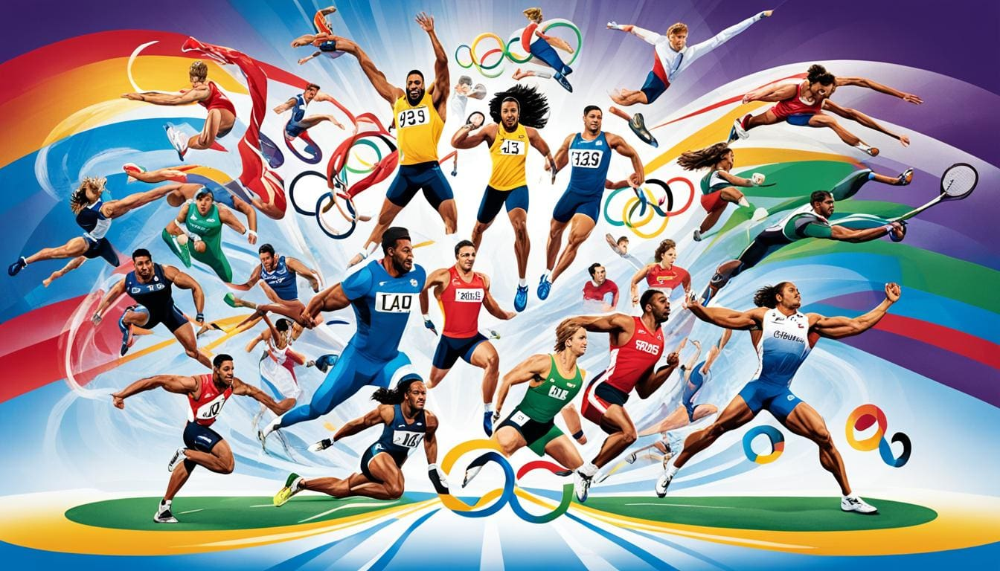

LoremFootball, often called 'The Beautiful Game,' is more than just a sport; it is a global phenomenon that transcends borders and cultures. It requires a perfect blend of teamwork, skill, and strategy. Whether it is played in massive stadiums or on small streets, the goal remains the same: to achieve victory through perseverance. For many, football is a source of inspiration, teaching us that with discipline and hard work, any obstacle can be overcome. It is a game where stars are born and history is made in just ninety minutes."
"Handball is a fast-paced and dynamic team sport that demands incredible agility, strength, and precision. Known for its high-scoring matches and intense physical contact, it keeps fans on the edge of their seats. Players must show exceptional coordination to dribble, pass, and shoot while moving at top speed. It is a game of strategy where the goalkeeper often becomes the hero, making split-second saves. Beyond the competition, handball fosters a strong sense of sportsmanship and collective effort."Handball is a fast-paced and dynamic team sport that demands incredible agility, strength, and precision. Known for its high-scoring matches and intense physical contact, it keeps fans on the edge of their seats. Players must show exceptional coordination to dribble, pass, and shoot while moving at top speed. It is a game of strategy where the goalkeeper often becomes the hero, making split-second saves. Beyond the competition, handball fosters a strong sense of sportsmanship and collective effort.""